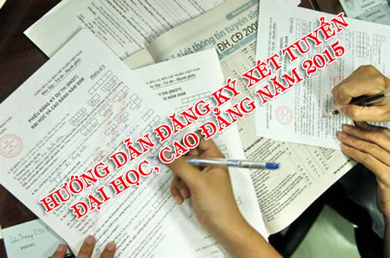

Hướng dẫn làm hồ sơ xét tuyển Đại học - Cao đẳng 2015

Lần cập nhật cuối lúc Thứ sáu, 31 Tháng 7 2015 09:51 Viết bởi Administrator Thứ sáu, 31 Tháng 7 2015 09:22
Chiều ngày 28/7, Bộ GD&ĐT đã chính thức công bố điểm sàn ĐH, CĐ năm 2015 (ngưỡng điểm đảm bảo chất lượng đầu vào Đại học, cao đẳng năm 2015)
 Hình minh hoạ
Theo đó, điểm chuẩn ĐH năm 2015 tất cả các trường không được thấp hơn 15 điểm, điểm chuẩn các trường cao đẳng không được thấp hơn 12 điểm.
Như vậy những thí sinh nào có tổng điểm lớn hơn hoặc bằng 15 điểm đủ điều kiện để làm hồ sơ xét tuyển vào các trường ĐH năm 2015.
Từ ngày 1/8 các trường ĐH bắt đầu nhận hồ sơ xét tuyển của thí sinh. Ngay từ bây giờ các thí sinh cần hoàn thiện hồ sơ. Hồ sơ xét tuyển Đại học, cao đẳng năm 2015 các em có thể mua tại trường THPT.
Tải mẫu bì hồ sơ, phiếu đăng ký xét tuyển và hướng dẫn ghi phiếu đăng ký xét tuyển tại đây
Lưu ý:
Bộ GD&ĐT không yêu cầu phải có vỏ hồ sơ xét tuyển ĐH, CĐ. Nếu các bạn không mua được vỏ hồ sơ cũng không vấn đề gì nhé.
- Thí sinh tự do cũng có thể mua tại bất kỳ trường THPT nào gần nơi mình nhất.
Hồ sơ đăng ký xét tuyển đại học cao đẳng bao gồm 3 giấy tờ bắt buộc sau:
- Phiếu đăng kí xét tuyển có ghi rõ đợt xét tuyển, được đăng kí 4 ngành của một trường cho mỗi đợt xét tuyển, các nguyện vọng được xếp thứ tự ưu tiên từ 1 đến 4. Mỗi nguyện vọng cần chỉ rõ ngành đăng kí xét tuyển và tổ hợp môn thi dùng để xét tuyển (theo mẫu quy định);
- Bản gốc Giấy chứng nhận kết quả thi ghi rõ đợt xét tuyển và điểm của tất cả các môn thi mà thí sinh đã đăng kí dự thi (theo mẫu quy định) có đóng dấu đỏ của trường chủ trì cụm thi;
- Một phong bì đã dán sẵn tem, có ghi rõ họ tên, địa chỉ, số điện thoại liên lạc của thí sinh;
- Phiếu đăng ký ưu tiên xét tuyển (Nếu có)
- Giấy chứng nhận đoạt giải (Nếu có)
Hướng dẫn cách ghi hồ sơ đăng ký xét tuyển ĐH, CĐ năm 2015 như sau:
Tải mẫu bì hồ sơ, phiếu đăng ký xét tuyển và hướng dẫn ghi phiếu đăng ký xét tuyển tại đây
- 27/11/2015 08:34 - Từ Huyền thoại Everest đến Học trò xứ Quảng
- 25/11/2015 09:42 - Lễ ra mắt game show Học trò xứ Quảng
- 05/11/2015 16:30 - Triển khai tham gia cuộc thi tìm hiểu lịch sử văn …
- 04/11/2015 10:05 - Danh sách học sinh được tham gia bồi dưỡng thi HSG…
- 29/08/2015 08:55 - Thầy và trò trường THPT chuyên Nguyễn Bỉnh Khiêm c…
- 29/04/2015 16:09 - Đội tuyển HSG môn lịch sử Quảng Nam đạt tỉ lệ giải…
- 01/04/2015 19:46 - Hướng dẫn tổ chức thi THPT quốc gia và xét công n…
- 05/02/2015 13:54 - Kết quả kỳ thi chọn học sinh giỏi quốc gia lớp 12 …
- 10/12/2014 00:00 - Từ chuyến đi Hội thảo Vĩnh Phúc
- 13/11/2014 07:42 - Trường THPT chuyên Nguyễn Bỉnh Khiêm - Quảng Nam t…